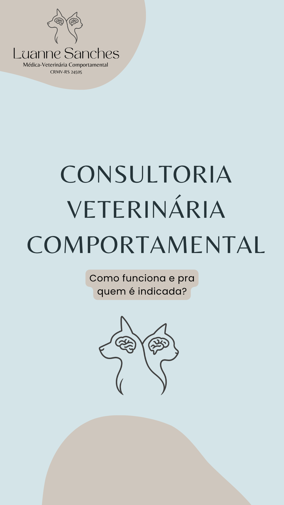
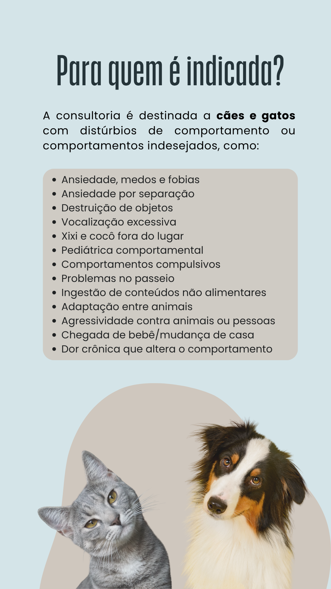

A Medicina Veterinária Comportamental é uma área especializada que une ciência, empatia e técnica para
compreender e
tratar os comportamentos indesejados ou preocupantes em animais de estimação. Essa abordagem vai muito
além da
simples correção de condutas: busca identificar as causas emocionais, ambientais e fisiológicas que
influenciam o
comportamento, promovendo o bem-estar e o equilíbrio tanto do animal quanto da família.
Baseada na ciência do comportamento animal e na integração com outras especialidades, essa área tem
crescido
significativamente, refletindo o reconhecimento da importância da saúde mental dos pets. Hoje, sabemos
que nossos
animais também podem sofrer com estresse, ansiedade, fobias e outros transtornos emocionais — e contar
com um
“psiquiatra veterinário” é essencial para ajudá-los a viver com mais qualidade de vida.
O trabalho do médico-veterinário comportamental envolve diagnóstico preciso e planos terapêuticos
individualizados,
que podem incluir modificações ambientais, estratégias de manejo, terapias comportamentais e, quando
necessário,
suporte farmacológico. O objetivo é sempre elaborar a melhor terapia para restaurar a harmonia entre o
pet e sua
família.
Atendo casos como:
Ansiedade e medos.
Destruição de objetos.
Vocalização excessiva.
Eliminação fora do local adequado.
Problemas de separação.
Comportamentos compulsivos.
Dificuldades no passeio.
Ingestão de conteúdos não alimentares (síndrome de pica)
Adaptação entre animais.
Agressividade com pessoas ou outros animais.
Mudanças na rotina, como chegada de bebê ou mudança de casa.
Como funciona o atendimento

